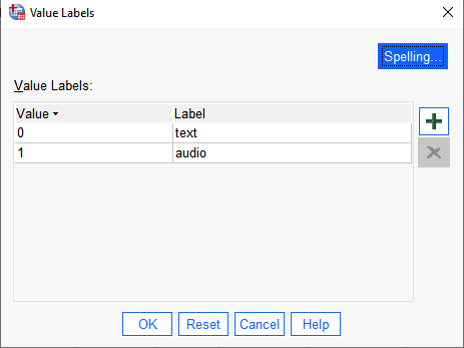

SPSS Lab activity - Comparisons between two groups
Jamil Palacios Bhanji and Vanessa Lobue
Last edited Oct 26, 2022
Goals for today
- Compare two means from independent groups (continuous outcome variable)
- use boxplot, histograms to check assumptions
- assumptions okay: Independent samples t-test, equal variance assumed or not
- Effect size Cohen d (pooled variance)
- assumptions not okay: nonparametric Wilcoxon rank sum (Mann-Whitney U)
- Effect size r (use z-to-r formula)
- Compare two means from dependent samples (e.g., paired samples)
- use boxplot, histograms to check assumptions
- assumptions okay: dependent (paired) samples t-test
- Effect size Cohen d (use difference between pairs)
- assumptions not okay: non-parametric Wilcoxon signed rank test
- Effect size r (use z-to-r formula)
Step 0 - Get organized, import data
download this data file into a "data" folder within your project folder:
- Schroeder_Epley_2015_Study_4_abbrev.csv
- make an "spss" folder (inside the project folder) for your SPSS files, and open a doc (in your preferred program) to take notes
Step 0.1 - Start SPSS and import the data
- data description:
This dataset is from Study 4 of Schroeder, J., & Epley, N. (2015). The sound of intellect: Speech reveals a thoughtful mind, increasing a job candidate’s appeal. Psychological Science, 26, 877-891. and is used in the Open Stats Lab t-test activity. In this study, professional recruiters from Fortune 500 companies evaluated job candidates based on a brief "elevator pitch". The recruiters were randomly assigned to listen to an audio recording of the pitch ("audio" condition) or read a transcript of the pitch ("text" condition), then the recruiters rated how likely they would be to hire the candidate.
- there are three variables in the file you downloaded:
pnum, CONDITION, and Hire_Rating (there's also pnum_rm but ignore that for now)
pnum stores participant ids (professional recruiters sampled from a conference meeting)
CONDITION stores the "audio"/"text" condition indicating that recruiters heard the pitch ("audio"=1) or read the pitch as text ("text"=0) - this is our grouping variable (IV))Hire_Rating stores the recruiters' rating of how likely they would be to hire the candidate (0 = not at all likely, 10 = extremely likely) (this is our dependent variable (DV))
Import the "Schroeder_Epley_2015_Study_4_abbrev.csv" data:
Open SPSS and use File -> Import Data-> CSV or Text Data - now check the variable types and add labels if you wish. Save the files with a sensible name like "Hiring_Ratings".
Careful! If you use "import text data" make sure you set the only delimiter as "comma" (SPSS may automatically select "space" as a delimiter, so uncheck that option)
In Variable View (or in the import process):
1. Set pnum, CONDITION and pnum_rm to Type: Numeric, Measure: Nominal, and set Hire_Rating to Type: Numeric, Measure: Scale.
2. Enter labels for the CONDITION variable: Click on the "Values" cell for the CONDITION variable, then click the three dots in the cell, then enter 0 with the Label "text", and 1 with the Label "audio", like this:
{width=50%}
Step 2 - Examine group means and distributions
 {width=50%}
{width=50%}
Above is the decision process chart from the book.
Following the chart, we should start with box plots and histograms to check for unusual cases, non-normality, and possible differences in variance (violation of homogeneity) between groups. Let's also view descriptives by group. See if you can use what you learned in previous activities to view (for the DV Hire_Rating variable)
- a box plot for each group
- a histogram and Q-Q plot for each group
- a table including mean, median, sd, and #cases by group
the easiest way to organize descriptives by group in SPSS is by using Analyze->Descriptive Statistics->Explore, and put the grouping variable ("CONDITION") in the Factor List.
To jog your memory, here is a link to the "import and examine" activity where we made a descriptive table and distribution plots.
Find the following information in the output:
1. Number of cases in each group
2. Mean, median, Std Deviation for each group
3. Boxplot, Histogram and Normal Q-Q plot for each group
Step 3 - Compare means with an independent samples t-test
- With such a small dataset it is hard to make a definite judgment of whether the data are normally distributed, but there are no extreme points and the distribution is not far from normal (Q-Q plot points are near the diagonal). The variance of each group is similar, but as we discussed earlier we will not assume equal variances. There are three more cases in the audio compared to the text condition, but that is not a problem in itself.
- So let's compare the means of the two groups with an independent samples t-test
- Go to Analyze->Compare means->Independent Samples T-test
Hire_Rating is the Test variable
CONDITION is the grouping variable
- Click "Define Groups" and enter "1" as group 1 and "0" as group 2 (don't include the quotation marks)
- check the box for effect size
Look at the Independent Samples Test summary:
- Levene's Test for Equality of Variances is an F-test of the null hypothesis that the variance of each group is equal. Some researchers use this test to decide whether to assume equal variances in the groups. A low "Sig." for this test would indicate that you should not assume the group variances are equal (and use the "Equal variance not assumed" row of the output (aka the Welch two sample t-test). Others say we can just use the Welch test by default because it is more general and there is little difference in power when variances are actually equal. Note that normality is still an assumption for both tests.
- The t-statistic, under "t", is the difference between group means divided by estimated standard error (see Chapter 10 of the Field textbook), and the two-sided p-value tells you the probability of a t-statistic at least this far from zero (positive or negative) under the null hypothesis (that the group means are not different). The one-sided p gives the probability of a t-statistic at least this much greater than zero under the null hypothesis.
- The sign of the t-statistic (positive or negative) is determined by whichever group value you put as Group 1 vs Group 2 (if the Group 1 mean is larger the t-stat will be positive.
- Notice the degrees of freedom (equal variance assumed), df, is equal to the number of cases minus 2 (because we estimate 2 parameters: the mean for each group) - it is a little lower (and not an integer) in the "Equal variances not assumed" row.
- The mean difference is the mean of Group 1 minus the mean of Group 2 (4.714-2.889 = 1.825). Standard Error is the standard error of that difference. The t-statistic is the mean difference divided by the standard error.
- The 95% confidence interval gives an interval around the estimated difference between means: we expect 95% of intervals constructed this way to contain the true difference in population means.
Effect size - independent samples
Below the "Independent Samples Test" table there is the "Independent Samples Effect Sizes" table. This table lists 3 effect size measures (values in the "point estimate" column) and 95% confidence intervals around the effect size measures.
Each effect size measure is based on the difference between means divided by some measure of deviation. SPSS gives you Cohen's d where the denominator is the standard deviation (ds in the Lakens (2013) article). Hedge's g also uses the pooled standard deviation in the denominator, with a correction that is considered more accurate for small samples. Glass' delta uses the standard deviation of only one of the groups (Group 2) in the denominator, which may be appropriate when one group is considered a control group. The "Standardizer" column in the effect size table tells you what the denominator is for each effect size measure.
Now, answer the following questions for yourself based on what you've done so far
- What is the difference between the mean Hire_Rating level for the group of recruiters that heard audio pitches compared to the mean level for recruiters that read text pitches (in terms of raw units of the 0-10 rating scale)?
- What is the estimated effect size (ds), and confidence interval for the effect size?
- What do you conclude about the effect of audio versus text pitches based on this sample of data you have examined? (assume this is a random sample from the population of professional recruiters) Can you reject the null hypothesis that the mean likelihood to hire ratings for each group are the same?
How to report the result
A report of the result of a comparison like this should include:
1. Type of comparison (this can be in the Methods section. e.g. "Means were compared by an independent samples t-test (equal variances not assumed).")
2. Means and SDs for each group (you might also report a confidence interval for each mean and/or for the difference between means)
3. Test statistic with degrees of freedom and p value
4. Effect size
Following the way the result was reported in the original publication (Schroeder & Epley, 2015) we could report the finding like this:
"Recruiters reported being more likely to hire the candidates when they listened to audio pitches (M = 4.71, SD = 2.26) than when they read the same pitches (M = 2.89, SD = 2.06), t(36.87) = 2.64, p = .01, 95% CI of the difference = [0.42, 3.23], d = 0.84."
Step 4 - Non-parametric test for independent samples (based on sum of ranks)
- What if we were concerned that the assumptions (normality) were violated? In such a case we can use a non-parametric test for comparing groups. To do this we will use the Mann-Whitney Test (equivalent to the Wilcoxon rank sum test), where there are no assumptions related to normality or equal variance.
- This statistic is based on first ranking the scores and then summing the total of the ranks for each group (you may recall that the non-parametric Spearman correlation is also based on ranked scores).
- Because this statistic is based on the ranks, the null hypothesis is properly stated as "the probability that a randomly drawn case from one group is larger than a randomly drawn case from the other is equal to 0.5". The procedure is described fully in section 7.4 of the Field Textbook.
- To run the Mann-Whitney test in SPSS, go to Analyze->Nonparametric Tests->Independent Samples:
- click "Customize Analysis"
- under the "Fields" tab, set
Hire_Rating as the "Test Field" and CONDITION as the "Groups"
- under the "Settings" tab, select "Customize tests" and check the box for "Mann-Whitney U (2 samples)"
- click Run
Examine the output
- Look for the table titled "Independent Samples Mann-Whitney U Test" and find the following:
- Mann-Whitney U
- Asymptotic Sig value (p-value)
- Standardized Test Statistic (z-stat)
- There are some issues computing a p-value when there are ties in the ranks. For this reason you might choose instead to use a robust test such as the Yuen (1974) test of trimmed means, or use a bootstrapped confidence interval in the regular independent samples t-test options (see Field Textbook section 10.8.4).
- What about an effect size measure for this kind of comparison? The Field textbook (section 7.4.5) recommends calculating an r value with the formula
(r = z/sqrt(N)). We have to calculate it for ourselves as r = 2.461/sqrt(39) = .394
- When reporting a result of a Wilcoxon Rank Sum test, you should report the medians, test statistic, p-value, and effect size, with an explanation in the Methods of what test you used. For example,
Methods: "The distributions of the dependent variable in each group was non-normal, therefore groups were compared by Mann-Whitney test (Mann & Whitney, 1947) implemented in SPSS, and effect size is reported as r computed from the test z-score (Rosenthal, 1991)."
Results: "Recruiters rated candidates more highly when they listened to pitches (Mdn = 5) than when they read the same pitches (Mdn = 2), Mann-Whitney U = 275.5, p = .014, z = 2.461, r = .394."
Step 5 - Dependent samples (also called paired samples, within-subjects comparison, repeated measures)
Now, let's imagine a different sample of data, where each recruiter was exposed to both conditions (audio and text) and made the same ratings, so from each recruiter there are two Hire_Rating measures: one in the audio and one in the text condition. This is a within-subjects or repeated measures design. When we analyze this sample we need to account for the fact that measures in each condition are dependent, meaning that the "audio" rating from a recruiter may be related to the "text" rating from the same recruiter.
What to do:
We'll use the same data file, but reorganize it as if it were a within-subjects design. We'll use the pnum_rm variable as the participant id variable (instead of pnum) to do this.
1. For repeated measures analyses in SPSS we need to reformat the dataset so that there is one row for each ID (pnum_rm) and the Hire_Rating values for each condition are in two separate variables
1. Delete the 3 cases with no value in the pnum_rm column (right-click on the case number and "clear"), then save the file with a new name, like "HiringRatingspaired"
2. Go to Data->Restructure
3. select "Restructure selected cases into variables" (next)
4. Enter pnum_rm as the Identifier Variable
5. Enter CONDITION as the Index Variable (next)
6. Select "Yes" to sort the data (next)
7. Select "group by index"
8. click Finish
9. Rename the "Hire_Rating.0" variable to "Hire_Rating_text" and the "Hire_Rating.1" variable to "Hire_Rating_audio", then set the label fields (this is helpful for the way the variables appear in the dialog boxes), and set the Measure type to "Scale" for the two variables.
- generate a box plot, histogram, Q-Q, and table of means similar to what you did for the first sample (use Analyze->Descriptive Statistics->Explore) - the only difference between these new descriptives and the descriptives you created earlier is that there are 3 less data points, and only 18 cases total.
Next, use a paired samples t-test to compare ratings in the "audio" condition to ratings in the "text" condition
- Go to Analyze->Compare Means->Paired Samples T Test
- Move
Hire_rating_audio to "Variable 1" for Pair 1
- Move
Hire_rating_text to "Variable 2" for Pair 1
- Check the box for effect size, and select "Standard deviation of the difference" (this will give you effect size estimates specific to the repeated measures design)
What is different in the analysis of this within-subjects design?
- The output looks similar to the independent samples t-test. Note the Mean (of the difference between pairs), 95% confidence interval around the mean, t, and Sig. values
- With this design, observations are not independent. Each observation is related to another observation from the same recruiter.
- So our model (of the difference between conditions) actually has only 18 independent observations because we are using the difference between
audio and text hiring ratings for each recruiter (17 degrees of freedom because we estimate one parameter, the mean difference between conditions).
- A paired samples t-test is exactly the same as conducting a 1 sample t-test on the difference between conditions compared to zero (notice that the output says "mean of the differences").
- The t-statistic is still the ratio of the mean difference between conditions divided by estimated standard error, but our estimated standard error is now based on the difference between pairs of values rather than the standard errors for each group
Effect size
Step 6 - Non-parametric test for paired samples
- One non-parametric alternative to the paired samples t-test (useful when assumptions are violated) is the Wilcoxon signed rank test.
- This test is based on ranking the differences between scores in the two conditions you’re comparing. The sign of the differences is attached to the ranked scores, hence the name of the test (see Field textbook section 7.5 for details).
- Because this statistic is based on the ranks, the null hypothesis is that the median of the differences between conditions is zero.
- to run the Wilcoxon signed rank test, Go to Analyze->Nonparametric Tests->Related Samples:
- click "Customize Analysis"
- under the "Fields" tab, set
Hire_rating_audio and Hire_rating_text as the "Test Fields"
- under the "Settings" tab, select "Customize tests" and check the box for "Wilcoxon matched pair signed rank (2 samples)"
- click Run (you'll get an error if the variable measure types are not set to Scale or Ordinal)
Examine the output
- The output will give you a test statistic (referred to as V in R and as W in other places), a two-sided Sig (p-value), and a Standardized test statistic (z-stat)
- The Sig. value gives the probability of the observed "location shift" (median shift from zero) or greater if the null hypothesis is true.
- What about an effect size measure for this kind of comparison? The Field textbook (section 7.5.5) makes the same recommendation as for the independent samples comparison:
(r = z/sqrt(N)) where N is the total number of observations (not the number of individuals). Just like before, we have to compute this ourselves.
- try it and record the result in your notes.
That's all for the SPSS activity, have fun in R now!
References
- Chapters 7 & 10 of Field textbook: Field, A.P. (2018). Discovering Statistics Using IBM SPSS Statistics. 5th Edition. London: Sage.
- Lakens, D. (2013). Calculating and reporting effect sizes to facilitate cumulative science: a practical primer for t-tests and ANOVAs. Frontiers in psychology, 4, 863.
- Yuen, K.K. (1974). The two-sample trimmed t for unequal population variances. Biometrika, 61, 165–170.